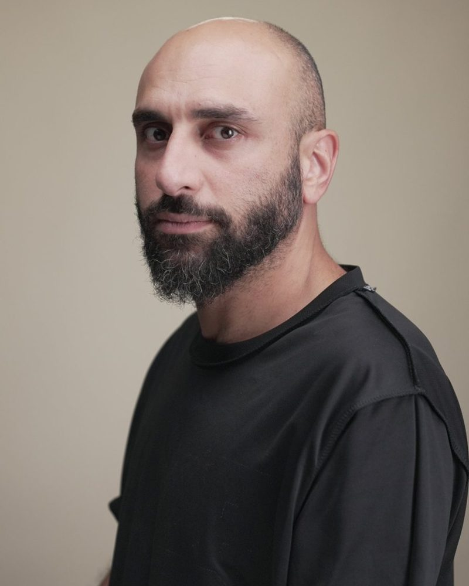
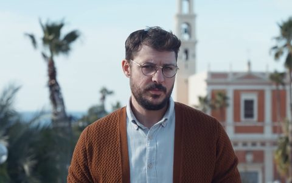
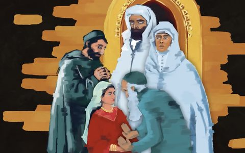
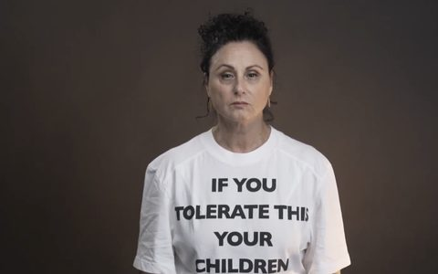
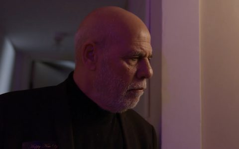
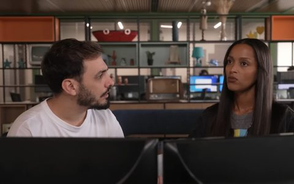
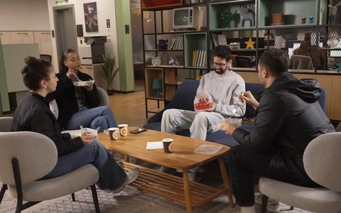
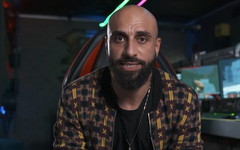
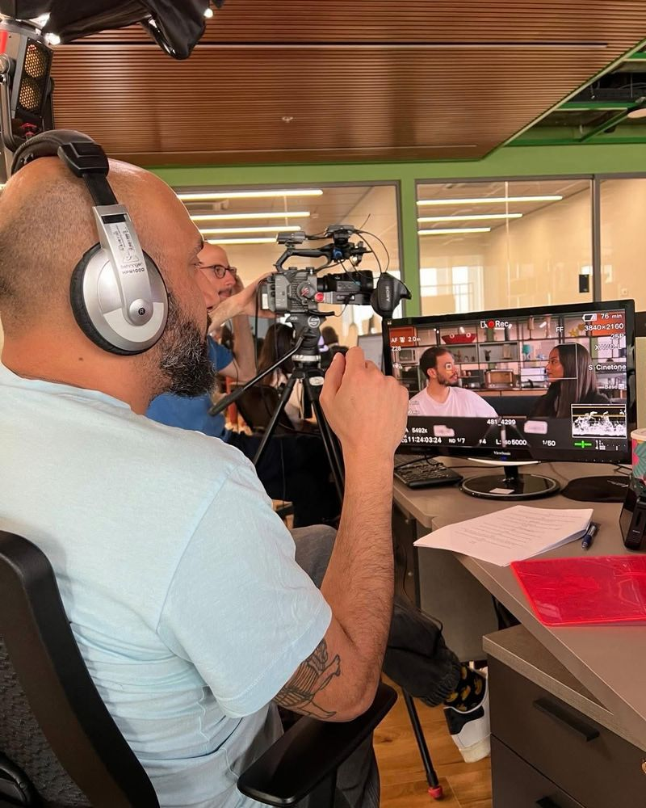

Hey,
I’m Orry.
Digital director, creative and strategist.
I look for the tension between what we see and what we feel.
Storyteller.
Directing | Creative | Strategy

Portfolio
Click a frame for details and to watch
Instagram Blocked Rotem

The Jewish Priest

Oketz Says Goodbye to Taiga
What’s the Story of Eliezer Ben-Yehuda?
Forever Yellow and Black: A Special Memorial Project

Men’s Day

Don’t Breed in November

Uri Gavriel Presents: The Hive

The 2026 World Cup Is Coming to Kan!

An Exercise in Connection: Two Mothers of Hostages Sit Down to Talk

The Story of Solica the Righteous
One House in Khan Younis

20 Years Since the 5-0 Over Austria

An Exercise in Connection: A Haredi Man and a Reservist

Kan Oraita: The Day of Remembrance Is Rosh Hashanah
Moran Atias Is Fed Up With Women’s Organizations’ Hypocrisy After October 7

Hanna Azoulay Hasfari Speaks to the Moroccan People. In Moroccan.

A Farewell Party for 2023: The Year That Wouldn’t Leave

Thoughts: A Massage in Wartime

Rewriting the Ten Plagues

The Intervention

How Did the Japanese Shape Mizrahi Music in Israel?

What’s the Story of the Y2K Bug?
Who’s Afraid of the Jerusalem Monster?
Why Do We Only P**p at Home?
New: Comedy BOX!
Go Remember: A Podcast About the Holocaust From the Moment It Ended
Moriah Company: 2025 Year in Review
25 Years Later, Haim Tzinovitz Burns Again
Back to Nova

Now You’re Talking
A bit about me.

I’m Orry, married to Karen and dad to Ella. I’m always on the hunt for the story, and my passion is telling it.
I’m a director, writer and presenter with more than 8 years of experience, most of them at Kan Digital, and a deep understanding of the whole creative space. I bring a gentle touch to documentaries, a clear way of organising and explaining knowledge in explainers, and a layered approach to cracking comedy sketches. I know digital.
I think I can make your dream come true.
Questions I’ve already answered
So what exactly do you do?
I’m a director, but I also do scriptwriting, presenting, production, research and content strategy. Sometimes all of them in one project, sometimes just the piece you’re missing. I make docu, explainers, scripted sketches and podcasts too.
Do I need a proper brief?
Not necessarily. An idea, a problem or a feeling is enough, and we’ll build it from there together. If you already have a brief, great.
Want to put on tefillin?
Sure!